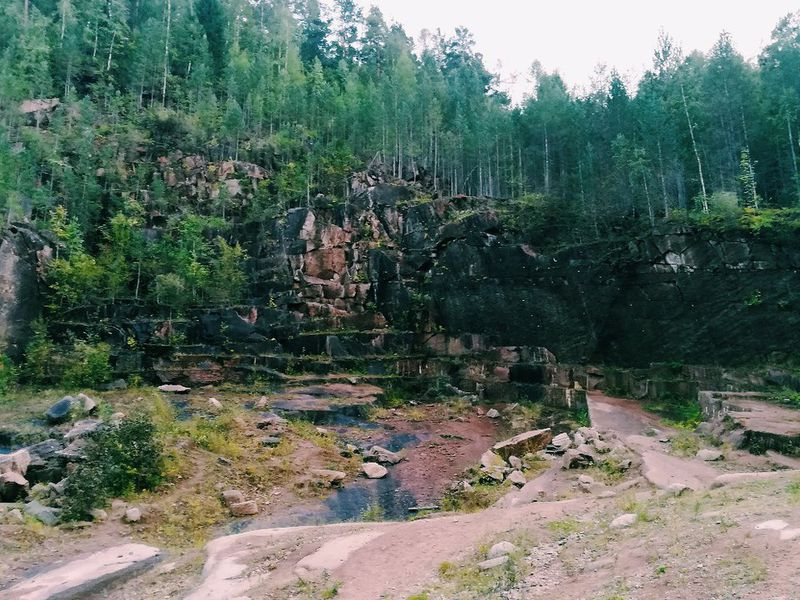
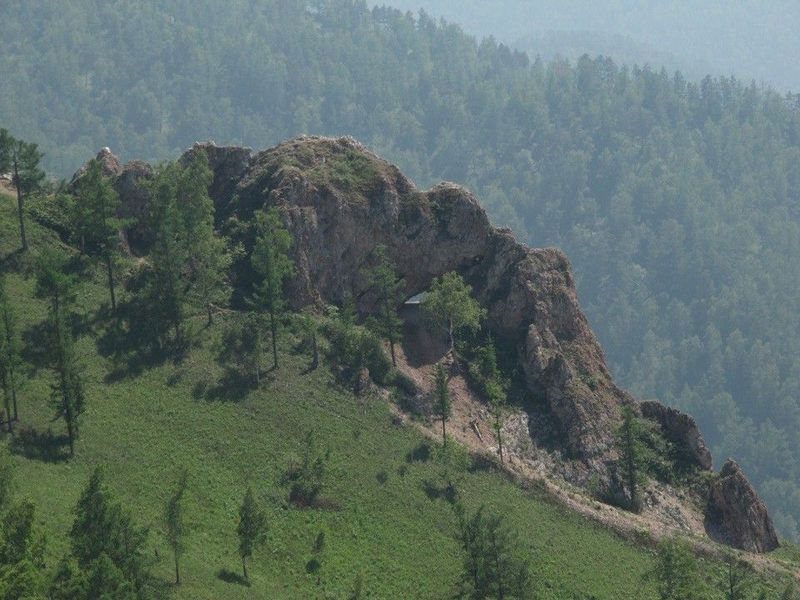
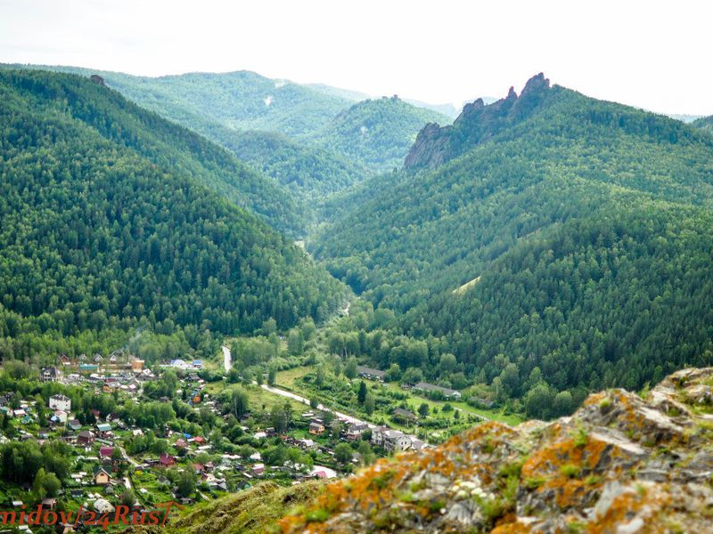
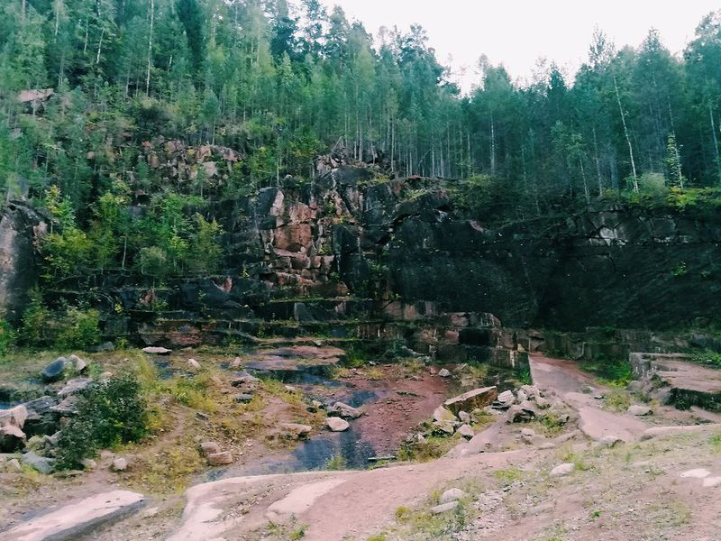
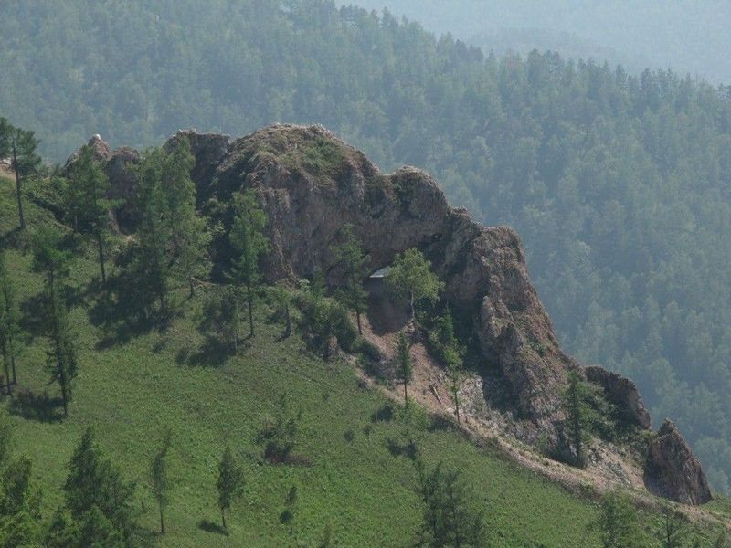
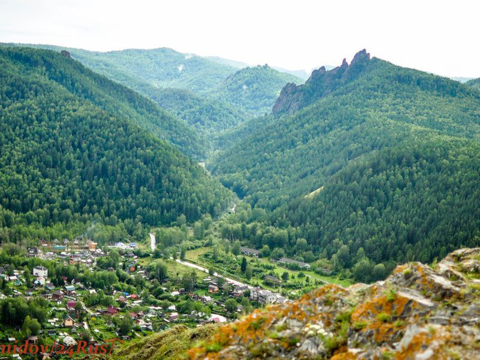

Поднимаясь в горы древней тропой шаманов, вы не только увидите необычные памятники заповедника Столбы, но также познакомитесь с местными преданиями и легендами. Мы поговорим о левитации, целебной воде и других чудесах, а также полюбуемся головокружительными панорамами с лучших смотровых площадок. Путешествие начнется в живописной долине реки Базаиха. Здесь, в лесной чаще, притаились заброшенная каменоломня и родник с кристально чистой водой.
Оба памятника заповедника Столбы считаются местами силы. Мы отведаем прохладной и вкусной воды, зарядимся энергией этих мест и отправимся к началу тропы шаманов — Красному гребню. Вы подниметесь на сотни метров и с Красного гребня осмотрите Красноярск и его окрестности, а также массивные скалы заповедника. Смотровая площадка — не только видовая локация, но и место паломничества эзотериков. В городских хрониках сохранились упоминания о необъяснимых феноменах левитации на Красном гребне. Может, и вы ощутите нечто особенное?
Любителей же геологии эти места поразят своей историей, ведь скальный массив — это дно древнего моря, где и сейчас можно отыскать окаменелые останки морских обитателей прошлого. Продолжая подъем, вы услышите истории о шаманах енисейских кочевых народов. Я расскажу об обрядах и таинстве нашего пути, который ведет к мистической Арке. Согласно старинному поверью, Арка сжигает плохую карму и исцеляет прошедших сквозь нее. После проведения древнего ритуала, мы выйдем на каменный балкон, чтобы насладиться головокружительными видами, заслуженным отдыхом и обедом.